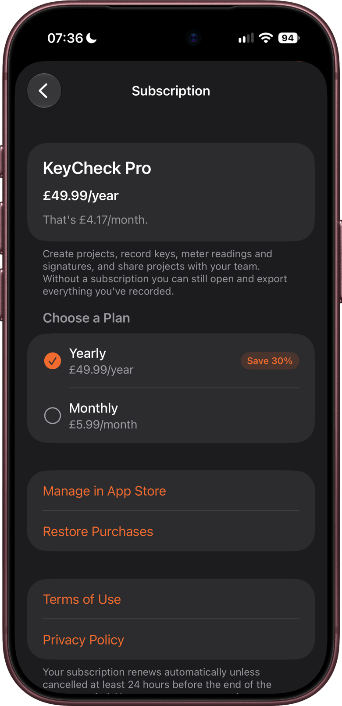
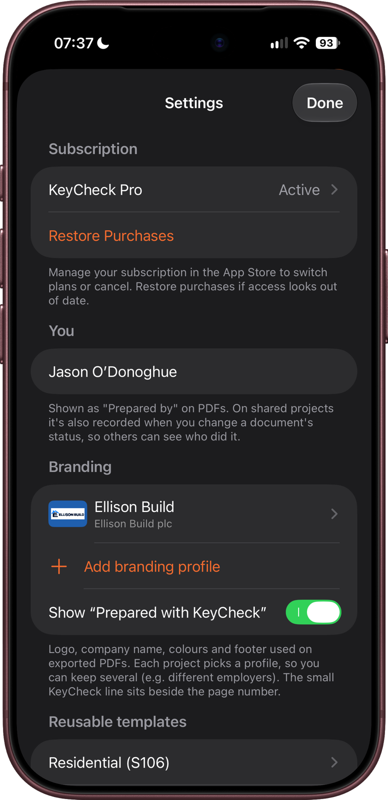
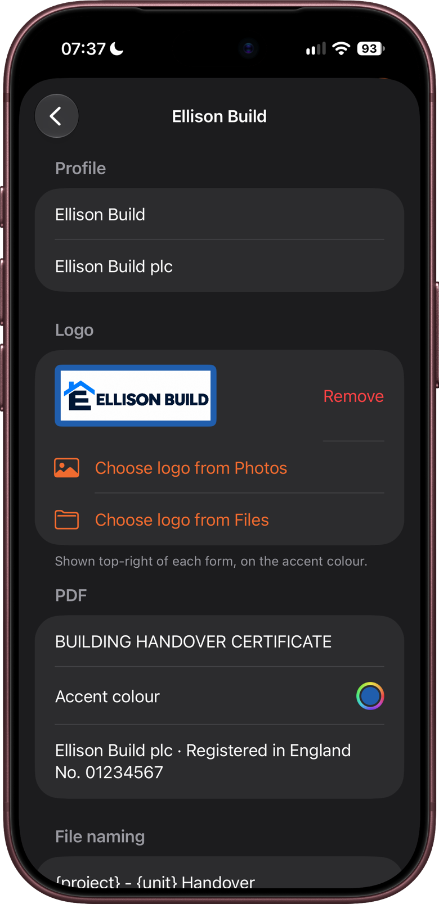
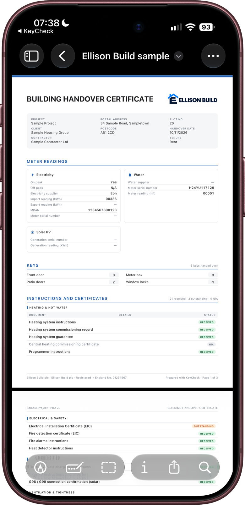
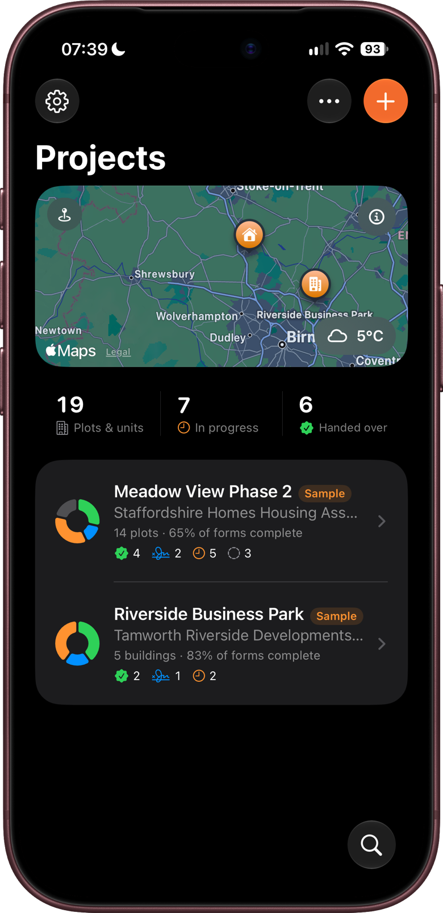

Get KeyCheck ready to use: install it, subscribe to KeyCheck Pro, add your name and branding, and try the sample projects.
It takes about five minutes. Settings is on the Projects screen: tap Settings (the gear button).
Installing KeyCheck
KeyCheck runs on iPhone and iPad with iOS 26 or iPadOS 26 or later.
- Open the App Store on your iPhone or iPad.
- Search for KeyCheck and tap Get.
Updates keep your projects. If you use KeyCheck on more than one device, iCloud sync keeps them in step (chapter 12).
KeyCheck Pro
Creating projects and making changes needs a KeyCheck Pro subscription. There's a monthly plan and a yearly plan, and new subscribers can start with a 7-day free trial. The subscription screen shows the current prices.
Subscribing
- Open the subscription screen. It appears when you open KeyCheck without a subscription. You can also tap View plans on the View only notice at the top of a project, or go to Settings → Subscription → KeyCheck Pro.
- Under Choose a Plan, pick Monthly or Yearly.
- Tap Start Free Trial (or Subscribe if you've had a trial before) and confirm with your Apple Account.
The subscription is paid through your Apple Account and renews automatically until you cancel it.

Without a subscription
You can close the subscription screen and keep using KeyCheck to read. Everything you've recorded can still be opened and exported, including PDFs, but nothing can be changed, and a View only notice appears at the top of each project. Your projects are never deleted when a subscription ends.
Checking, restoring or cancelling
- Settings → Subscription shows whether KeyCheck Pro is active and which plan you're on.
- On a new iPhone or iPad, or after reinstalling, tap Restore Purchases if KeyCheck doesn't recognise your subscription straight away.
- To change plan or cancel, open the subscription screen and tap Manage in App Store, or go to your Apple Account settings. Cancel at least 24 hours before the renewal date to avoid being charged for the next period.
Shared projects
If someone shares a project with you, you can open and export it without a subscription. To make changes, you need your own KeyCheck Pro, and the owner must have given you permission to make changes. Chapter 12 explains sharing.
Your name
Go to Settings → You and type your name in Your name.
- It appears as Prepared by at the top of every PDF: handover forms, the progress report, communal keys and project documents.
- On shared projects only, your name is also saved against each document change you make, so everyone can see who did what. On projects that aren't shared, no names are saved.
Your name stays on your device. It's only sent anywhere when it goes into a PDF you share, or into a shared project's history in iCloud.

Branding
Branding controls how your PDFs look: your logo, company name, colours and footer. KeyCheck starts with one profile called Default. You can keep more than one branding profile, for example one for each employer or client you work for. Each project uses one profile.
Setting up a profile
- Go to Settings → Branding and tap a profile, or tap Add branding profile to make a new one.
- Fill in the parts you want (see the table below).
- Tap Preview sample PDF to see how a handover form looks with this profile.
| Setting | What it does |
|---|---|
| Profile name | What the profile is called in KeyCheck, for example "Northfield Homes". It doesn't appear on PDFs. |
| Company name | Your company's name. |
| Logo | Tap Choose logo from Photos or Choose logo from Files. The logo sits in the top right of each form, on the accent colour, so a logo with a clear (transparent) background looks best. |
| Form title | The heading at the top of each handover form. |
| Accent colour | The colour used for headings and the logo's background. |
| Footer text | For example your company address, at the bottom of each page. |
| File name | How exported PDFs are named. Use {project}, {unit} (the plot) and {date}, and KeyCheck fills them in. The example underneath shows what a file name will look like. |


Changes save as you go.
Choosing a project's branding
- When you create a project, pick a profile under Branding on the New project screen.
- To change it later, open the project, tap Project setup (the sliders button, top right), then Project details, and choose a Branding profile. Choose None for plain PDFs.
Other branding options
- Show "Prepared with KeyCheck": a small line beside the page number on each PDF. Turn it off in Settings → Branding if you'd rather not show it.
- To give a profile to a colleague, swipe left on it and tap Share, then send it by AirDrop or email. They can open it in KeyCheck to add it to their own Settings.
- To delete a profile, swipe left on it and tap Delete. Projects using it go back to plain PDFs. You always keep at least one profile.
The sample projects
The first time you open KeyCheck, it adds two example sites:
- Meadow View Phase 2: a housing site with plots at every stage. Plots 1 to 4 are handed over and signed; plots 12 to 15 haven't been started.
- Riverside Business Park: a commercial site, using units instead of plots.
They include keys, meter readings, documents, communal keys and meters, planning conditions and log entries, so you can see what a busy project looks like and try the PDFs.
Sample projects have a Sample badge in the Projects list. They stay on this device and are never synced or shared, so you can change anything in them without affecting anyone else. Editing them needs KeyCheck Pro, like any other project.

Open Meadow View Phase 2 and compare plot 1 with plot 12. Then tap Share and export → Export progress report… to see the kind of report KeyCheck makes.
Removing and adding back the samples
- To remove a sample, swipe left on it in the Projects list and tap Delete.
- To add them back, go to Settings → Import → Add sample projects. This is greyed out while samples are already there, so delete both first if you want a fresh copy.
Other settings worth knowing
You don't need to change these to get started. Chapter 14 covers every setting.
- Feedback → Button haptics: a light tap when you press a button or flip a switch. Turn it off if you find it distracting.
- Meter photos → Auto-read meter photos: KeyCheck reads meter photos as soon as you take them. Photos are read on your device and never sent anywhere to be read. Chapter 5 explains more.
- iCloud sync: off until you turn it on. Chapter 12 explains it.